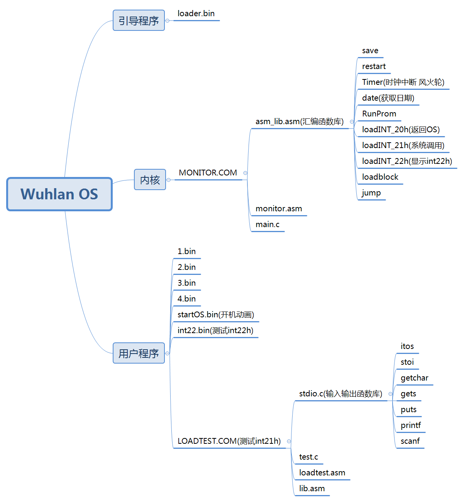
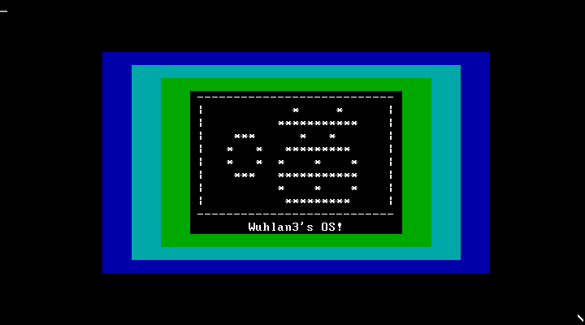
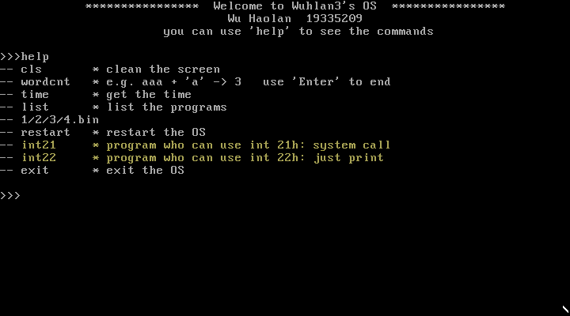
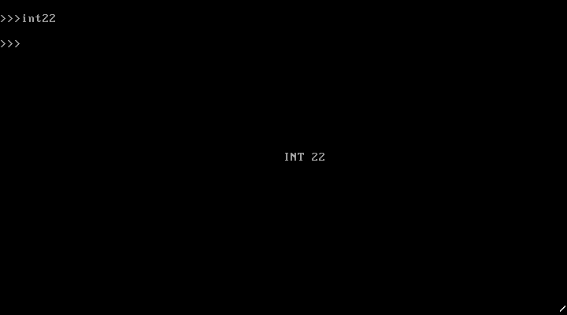
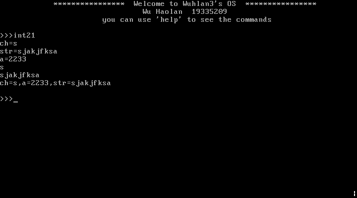

实验5：实现系统调用
实验目的
1、 学习掌握PC系统的软中断指令
2、掌握操作系统内核对用户提供服务的系统调用程序设计方法
3、掌握C语言的库设计方法
4、掌握用户程序请求系统服务的方法
实验要求
1、了解PC系统的软中断指令的原理
2、掌握x86汇编语言软中断的响应处理编程方法
3、扩展实验四的的内核程序，增加输入输出服务的系统调用。
4、C语言的库设计，实现putch()、getch()、printf()等基本输入输出库过程。
5、编写实验报告，描述实验工作的过程和必要的细节，如截屏或录屏，以证实实验工作的真实性
实验内容
(1) 修改实验4的内核代码，先编写save()和restart()两个汇编过程，分别用于中断处理的现场保护和现场恢复，内核定义一个保护现场的数据结构，以后，处理程序的开头都调用save()保存中断现场，处理完后都用restart()恢复中断现场。
(2) 内核增加int 20h、int 21h和int 22h软中断的处理程序，其中，int 20h用于用户程序结束是返回内核准备接受命令的状态；int 21h用于系统调用，并实现3-5个简单系统调用功能；int22h功能未定，先实现为屏幕某处显示INT22H。
(3) 保留无敌风火轮显示，取消触碰键盘显示OUCH!这样功能。
(4) 进行C语言的库设计，实现putch()、getch()、gets()、puts()、printf()、scanf()等基本输入输出库过程，汇编产生libs.obj。
(5) 利用自己设计的C库libs.obj，编写一个使用这些库函数的C语言用户程序，再编译，再与libs.obj一起链接，产生COM程序。增加内核命令执行这个程序：
1 2 3 4 5 6 7 8 9 10 void main () char ch,str[80 ];int a;getch (&ch);gets (str);scnf (“a=%d”,&a);putch (ch);puts (str);printint (“ch=%c, a=%d, str=%s”, ch, a, str);
(6) 编写实验报告，描述实验工作的过程和必要的细节，如截屏或录屏，以证实实验工作的真实性
实验环境
1.系统与虚拟机
Windows 10 - x64 18363.1139
VMware Workstation 16 Player：用于跑ubuntu虚拟机
Ubuntu 20.04.2 LTS
VirtualBox-6.1.18-142142-Win：用于运行.img文件
DOSBox DOS Emulator 0,74,0,0：用于tcc和tasm编译，并且运行.com文件
2.windows上的相关软件、编译器等
NASM version 2.10.07 compiled on Jan 2 2013
TCC.EXE：用于16位C语言编程
TLINK.EXE：用于C语言与汇编语言链接
TASM.EXE：用于.asm文件的汇编
3.Ubuntu上的相关软件、编译器等
NASM version 2.14.02
makefile：GNU Make 4.2.1
实验基本架构

实验过程
1.根据例程，写出保护现场与恢复现场
在C程序中定义了一个结构体，包含了汇编中的14个寄存器，用于存储原来的状态，结构体如下：
1 2 3 4 5 6 7 8 9 10 11 12 13 14 15 16 17 struct cpuRegisters {int ax; int bx;int cx;int dx;int di;int bp;int es;int ds; int si; int ss; int sp; int ip; int cs; int flags;
老师给出了Minix中的save和restart过程，我们可以先看懂该程序，再写出自己的_save和_restart。我们必须要明确刚调用save的时候栈里有什么东西，包括标志寄存器flag，代码段cs，中断代码pc，和save 的返回地址。我们发现结构体中的前7个寄存器一般来说是比较容易处理的（不会对当前执行的代码造成其他意想不到的影响），且可以在save执行过程中作为中介保存一下。
仿照老师所给的代码，使用结构体保存中断现场，且在执行save之后，ss,sp,ds,cs,ip几个寄存器会变为内核态的。详情可以看下面代码的注释部分，对于栈的变化进行详细的讲述：
1 2 3 4 5 6 7 8 9 10 11 12 13 14 15 16 17 18 19 20 21 22 23 24 25 26 27 28 29 30 31 32 33 34 35 36 37 38 39 40 41 42 43 44 45 46 47 ;保护中断现场，此时栈顶/flags/cs/int ip/save ip*********************
由于save的时候，最后才存储那7个寄存器，在恢复的时候，可以先恢复。由于我们使用si来进行寻址，所以先把恢复的si寄存器存入一个临时变量中，最后再进行恢复。比较需要注意的是栈的变化，首先把结构体作为栈，后来恢复了原来的栈，要对结构体进行手动寻址方式。
详情可以看下面代码的注释部分，对于栈的变化进行详细的讲述：
1 2 3 4 5 6 7 8 9 10 11 12 13 14 15 16 17 18 19 20 21 22 23 24 25 26 27 28 29 30 31 32 33 34 35 36 37 38 39 40 41 42 43 44 45 46 47 48 ;恢复中断现场********************************************************
这样，save、restart就已经写好了，我们要寻找一些方法来检验是否正确。使用方法
1 2 3 call _save
可以在Timer的前后使用，程序照常进行。
还可以在OUCH OUCH！的前后使用，程序如常，说明save、restart是成功的。
2.增加INT 20软中断程序
int 20h用于用户程序结束是返回内核准备接受命令的状态
INT20h的内容主要是与jump过程相互配合的，提供新的跳转到用户程序并且返回的方法。与之前的区别在于保护了内核栈，提供了新的用户栈。在jump里把用户程序的ss=cs，sp准备好，并且将其压入用户栈中。具体代码如下：
1 2 3 4 5 6 7 8 9 10 11 12 13 14 15 16 17 18 19 20 21 22 23 24 25 26 27 28 29 30 31 32 33 34 35 36 37 38 39 40 41 public _jump
INT20h，前半部分是对中断的载入，与其他中断的载入方式一致，不必赘述。从用户程序返回到内核的方法，恢复内核栈，再恢复寄存器最后直接返回即可
1 2 3 4 5 6 7 8 9 10 11 12 13 14 15 16 17 18 19 20 21 22 23 24 25 26 27 28 29 30 31 32 33 34 35 36 37 public _loadINT_20h
3.增加INT 21软中断程序
基本结构如下：
载入int 21h（与其他中断的载入方式类似，偏移量存放在地址84h，代码段地址存放在86h的位置）
执行int 21h
三个功能号，分别是：输出一个字符、获取键盘输入的字符（这个并不是完整的getchar）、返回内核（与int 20h一致）。
1 2 3 4 5 6 7 8 9 10 11 12 13 14 15 16 17 18 19 20 ;INT 21h****************************************************
1h：获取键盘输入的字符
1 2 3 4 5 6 7 8 9 10 11 12 INT_21h_1h proc near
2h：输出一个字符
1 2 3 4 5 6 7 8 9 10 11 12 13 14 15 16 INT_21h_2h proc near
3h：返回内核
1 2 3 4 5 6 7 8 9 10 INT_21h_3h proc near
4.增加INT 22软中断程序
由于save和restart已经准备好了，所以我们可以很轻松地写出INT 22h
加载22h中断，偏移量存放在地址88h，代码段地址存放在8ah的位置
Int22h中断处理程序(屏幕某处显示INT22H):int22h功能未定，先实现为屏幕某处显示INT22H。
1 2 3 4 5 6 7 8 9 10 11 12 13 14 15 16 17 18 19 20 21 22 23 24 25 26 27 ;22号中断***************************************************
使用一个用户程序来调用int 22h
1 2 3 4 org 8c00h
5.完善C函数库
事实上，在之前的实验中我已经写了一个类似的库，这一次实验的主要是实现printf和scanf.
printf和scanf都是参数变长的函数。我对此完全没有概念，只好求助于搜索引擎。
关键的操作在于取str指针的地址，通过+偏移量的方式，寻址得到后面的参数。
如：itos((int)*(&str+off))可以获得%d对应的数字，并将其转换为字符串
1 2 3 4 5 6 7 8 9 10 11 12 13 14 15 16 17 18 19 20 void printf (char *str, ...) {int i;int off = 1 ;for (i = 0 ; str[i] != 0 ; i++){if (str[i] != '%' ){else {if (str[i] == 'd' )puts (itos((int )*(&str + off)));else if (str[i] == 'c' )char )*(&str + off));else if (str[i] == 's' )puts ((char *)*(&str + off));else continue ;1 ;
1 2 3 4 5 6 7 8 9 10 11 12 13 14 15 16 17 18 19 20 void scanf (char *str, ...) {int off = 1 ;int i;for (i = 0 ; str[i] != 0 ; i++){if (str[i] == '%' ){switch (str[i]){if (str[i] == 'd' ){int *)(*(&str + off))) = stoi();else if (str[i] == 'c' )char *)*(&str + off));else if (str[i] == 's' )char *)*(&str + off));else continue ;1 ;
6.将所有文件进行编译，并写入软盘
我们再来看看实验的要求：
(5) 利用自己设计的C库libs.obj，编写一个使用这些库函数的C语言用户程序，再编译，再与libs.obj一起链接，产生COM程序。增加内核命令执行这个程序。
此次生成的.com程序涉及到四个代码文件，对于C函数库，经过网上搜索发现不能使用.h作为文件名，而应该直接使用.c。之后使用批处理提高生产效率（其中，后四段命令是新添加的）：
1 2 3 4 5 6 7 8 9 10 del *.objdel *.com3 /t monitor.obj main.obj, monitor.com,,3 /t loadtest.obj lib.obj stdio.obj test.obj, loadtest.com,,
本次实验引入了两个新的用户程序：
1 2 3 4 5 6 7 8 9 10 11 12 13 14 15 16 17 18 BIN = loader.bin startOS.bin 19335209_A.bin 19335209_B.bin 19335209_C.bin 19335209_D.bin test_int_22.binall: clear $(BIN) $(IMG) clear: $(BIN) $(IMG) %.bin: %.asm $< -o $@ %.img: $@ 1440$@ conv=notrunc$@ seek=1 conv=notrunc$@ seek=18 conv=notrunc$@ seek=19 conv=notrunc$@ seek=20 conv=notrunc$@ seek=21 conv=notrunc$@ seek=22 conv=notrunc$@ seek=23 conv=notrunc$@ seek=24 conv=notrunc
实验结果
开机动画正常运作

可以注意到，右下角的风火轮可以正常转动，同时新增加两个用户程序，分别用于测试int21和int22

int22可以正常显示

int21执行如下

问题与解决方式
终于解决了，之前实验中C语言字符串无法显示的问题【捂脸】，经过老师的轻轻一点拨，原来就是我在载入监控程序的时候，没有控制好载入扇区的数量。如下，对al的值进行修改即可。😊
1 2 3 4 5 6 7 8 9 10 11 mov ax,cs ;段地址 ; 存放数据的内存基地址
在dosbox编译的时候出现神奇错误：
Fatal: Command line: Can't locate file: load_stdio_test.asm
解决方法是，将文件名改短😓
在编译int 21h测试程序的时候，出现调用.com程序失败的问题。原来是.com程序超过了512kb，在载入内存的时候需要多载入几个扇区。这个问题也卡了好久，以后一定要注意😡
实验总结
本次实验看起来内容不多，但是真正做起来，是有非常多细节需要处理的。
第一个难关就是save和restart的设计。 它起到保护中断现场的作用，可以使得多出来的在后续的实验中大概会起到非常重要的作用。看起来只不过是push和pop的简单问题，但是事实上，很多的寄存器（如ss,sp等）是会影响当前指令的正常执行的，常常需要额外的变量存储，并且需要对栈的过程、对函数调用中的栈的调用过程非常清晰。通过对上网查阅资料，我对汇编语言中所有的寄存器的特点有了更深刻的理解。
接下来一个难关，是用户程序常常遇到调用失败的问题。很多时候是自己加载的扇区数，磁头号，扇区号不正确导致的。也出现了用户栈与内核栈并不对应导致错误。希望在后续的实验中能够避免。
希望下次实验能够顺顺利利！！！